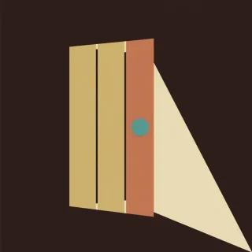

Songs · handpan arrangement for D Kurd
Knockin' on Heaven's Door
Dylan's four chords in F major with the sung line on 3, 4 and 5.

- Kind
- Songs
- Tempo
- 70 BPM
- Time signature
- 4/4
- Length
- 33 bars, about 113 seconds
- Notes used
- D3, A3, B♭3, C4, D4, E4, F4, G4
- Added
- 2026-10-30
Play in AlamutLearn bar by bar
About this arrangement
Knockin' on Heaven's Door by Bob Dylan in F major, 4/4 at 70 BPM, the record's key moved down a tone so that the chords F, C, G minor and B-flat all sit on this pan with their roots. Count ONE and two AND three and four AND. The sung line lives on three fields, C on 3, D on 4 and E on 5, the way the record stays on D, E and F sharp over the changing chords, with the low A on 1 under feel. Verse is Mama take this badge off of me: 5 3 5 4 then 4 4 4 over F and C; I can't use it anymore: 5 3 5 4 4 4 3 over G minor; it's getting dark, too dark to see: 3 5 4 5 4 4 4; feel like I'm knocking on heaven's door: 1 5 5 5 4 4 4 3. Chorus is knock knock knocking on heaven's door four times: 4 3 5 4 5 5 then 4 4, over F and C, G minor, F and C, B-flat. Intro and Outro are the chord pattern alone, bass on one and three with soft inner notes. Chords are two notes: 6 with 1 for F, 3 alone or with 4 for C, 2 with 7 for G minor, the ding with 2 or 4 for B-flat; in the Chorus the first knock on 4 takes the bass 1 or 7 under it. Learn the Chorus first; it is one shape over four chords.
Notation
Each line is one bar in 4/4. Numbers are the pan's fields, a dot is a rest, brackets hold notes struck together, and × is a tak on the shoulder. Read the number legend below.
Intro
[61] . 3 . 6 . 3 .3 . 5 . 7 . 5 .[27] . 4 . 7 . 4 .[27] . 4 . 7 . 4 .
Verse
[65] . 3 . 5 4 . 4[34] . 4 . 4 . 7 .[25] 3 5 4 . 4 4 .[23] . . . [27] . 4 .[63] 5 4 5 . 4 . 4[34] . 4 . 3 . 5 .[21] 5 5 5 4 4 . 4[23] . 3 . [27] . 1 .
Chorus
[41] . 3 . 5 4 5 .5 3 4 . 4 . 7 .[47] . 3 . 5 4 5 .5 2 4 . 4 . 7 .[41] . 3 . 5 4 5 .5 3 4 . 4 . 7 .[04] 2 3 . 5 4 5 .5 2 4 . 4 . [06] .
Chorus
[41] . 3 . 5 4 5 .5 3 4 . 4 . 7 .[47] . 3 . 5 4 5 .5 2 4 . 4 . 7 .[41] . 3 . 5 4 5 .5 3 4 . 4 . 7 .[04] 2 3 . 5 4 5 .5 2 4 . 4 . [06] .
Outro
[61] . 3 . 6 . 3 .3 . 5 . 7 . 5 .[27] . 4 . 7 . 4 .[27] . 4 . 7 . 4 .[61] . . . . . . .
Number legend
0D3 (ding), 146.8 Hz1A3, 220.0 Hz2B♭3, 233.1 Hz3C4, 261.6 Hz4D4, 293.7 Hz5E4, 329.6 Hz6F4, 349.2 Hz7G4, 392.0 Hz8A4, 440.0 Hz9C5, 523.3 Hz×tak, a rim or shoulder tap
Knockin' on Heaven's Door
چهار آکورد Dylan در فا ماژور، با خط آواز روی ۳، ۴ و ۵.
Knockin' on Heaven's Door از Bob Dylan در فا ماژور، میزان ۴/۴ با ۷۰ ضرب در دقیقه. گام اجرای اصلی یک پرده پایین آمده تا آکوردهای فا ماژور، دو ماژور، سل مینور و سیبمل همه با نت پایهشان روی این ساز باشند. بشمارید: یک و دو و سه و چهار و، با تأکید روی یک و روی «و»های بعد از دو و چهار. خط آواز روی سه خانه است: دو روی ۳، رِ روی ۴ و می روی ۵، همانطور که اجرای اصلی روی رِ، می و فادیز میماند و آکوردها زیرش عوض میشوند. لای بم روی ۱ فقط در خط آخر میآید. «بند» چهار خط دارد: ۵ ۳ ۵ ۴ و بعد ۴ ۴ ۴ روی فا و دو؛ ۵ ۳ ۵ ۴ ۴ ۴ ۳ روی سل مینور؛ ۳ ۵ ۴ ۵ ۴ ۴ ۴؛ و ۱ ۵ ۵ ۵ ۴ ۴ ۴ ۳. «همخوان» همان جملهٔ کوبیدن در است، چهار بار: ۴ ۳ ۵ ۴ ۵ ۵ و بعد ۴ ۴، روی فا و دو، سل مینور، فا و دو، و سیبمل. «مقدمه» و «پایان» فقط الگوی آکوردهاست، باس روی یک و سه و نتهای میانی نرم. آکوردها دونتیاند: ۶ با ۱ برای فا ماژور، ۳ تنها یا با ۴ برای دو ماژور، ۲ با ۷ برای سل مینور، و دینگ با ۲ یا ۴ برای سیبمل. در «همخوان» زیر اولین ضربه روی ۴، باس ۱ یا ۷ را هم بزنید. اول «همخوان» را یاد بگیرید؛ یک شکل است روی چهار آکورد.
More Songs
Riffs and melodies from well-known songs, moved onto the pan's ten notes.